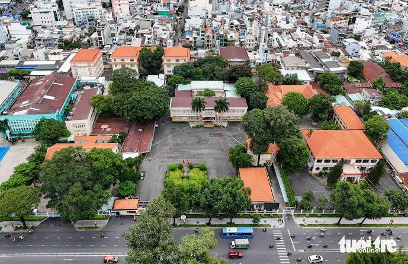
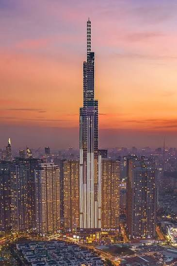
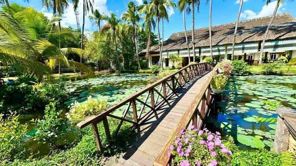
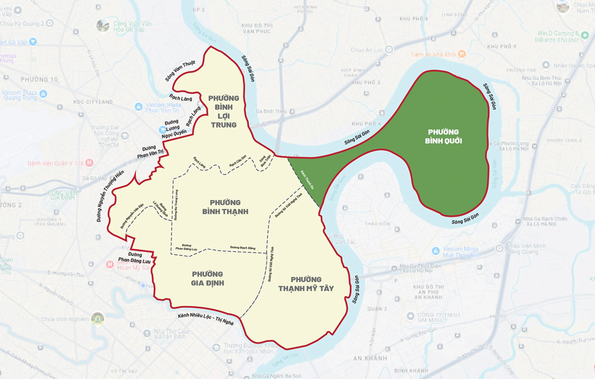
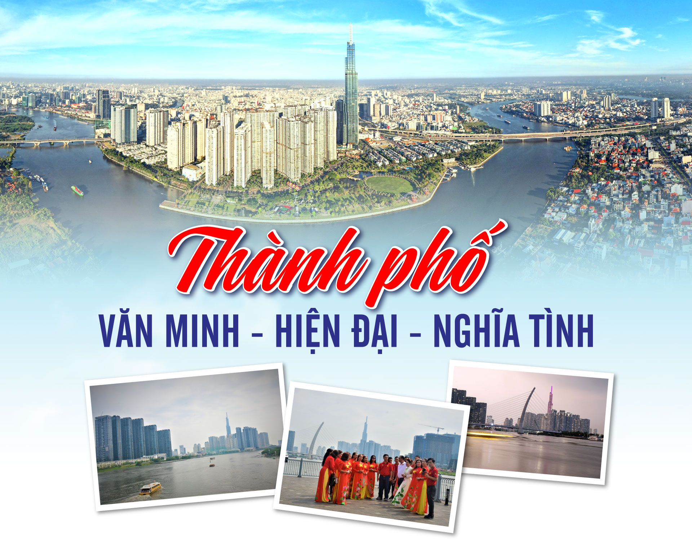

Quận Bình Thạnh - Phường Bình Thạnh
Kỷ Nguyên
Vươn Mình
Đô thị văn minh, hiện đại, nghĩa tình
Nhấn góc trang để lật
Đang tải album...
Đô thị văn minh · Hiện đại · Nghĩa tình
Quận Bình Thạnh - Phường Bình Thạnh
Đô thị văn minh, hiện đại, nghĩa tình
Nhấn góc trang để lật

🏛️ Sáp nhập · 01/07/2025
Theo Nghị quyết 1685/NQ-UBTVQH15, phường Bình Thạnh mới được thành lập từ việc sáp nhập Phường 12, Phường 14, Phường 24 và Phường 26 (quận Bình Thạnh cũ). Diện tích khoảng 3 km², dân số khoảng 117.000 người. Trụ sở UBND đặt tại số 6 Phan Đăng Lưu — từng là trụ sở điều hành cả quận, nay trở thành trụ sở phường.

🏙️ Biểu tượng · 720A Điện Biên Phủ
Tòa nhà cao 461,3 mét, 81 tầng — cao nhất Việt Nam, Top 15 thế giới. Tọa lạc tại 720A Điện Biên Phủ, phường 22 (nay thuộc phường Thạnh Mỹ Tây), ngay trung tâm quận Bình Thạnh. Thiết kế lấy cảm hứng từ bó tre truyền thống — biểu tượng sự đoàn kết và sức mạnh kiên cường. Tích hợp Vincom Center, khách sạn Vinpearl 5 sao, đài quan sát SkyView tầng 79–81.
🌳 Lá phổi xanh · 14 hecta
Nằm ngay bên bờ sông Sài Gòn, địa chỉ 208 Nguyễn Hữu Cảnh (nay phường Thạnh Mỹ Tây). Đầu tư 500 tỷ đồng, lấy cảm hứng từ Central Park New York. Gồm 40 hạng mục tiện ích: khu BBQ, sân thể thao phức hợp, khu vui chơi trẻ em, bến du thuyền. Điểm bắn pháo hoa lớn dịp Tết, 30/4, 2/9. Mở cửa miễn phí 5h00–21h30.

🌉 Cổng chào kiến trúc · 2022
Khánh thành 28/4/2022, dài hơn 1,4 km (phần cầu 886m), 6 làn xe. Trụ tháp chính cao 113 mét — biểu tượng cổng chào từ trung tâm qua Khu đô thị mới Thủ Thiêm. Thiết kế dây văng với 56 dây cáp, tuổi thọ 100 năm, chịu động đất cấp 7. Tổng vốn đầu tư gần 3.100 tỷ đồng. Nối Quận 1 với Bình Thạnh — Thủ Đức, mở ra không gian phát triển mới.

🌿 Miền Tây giữa lòng phố
Nằm tại phường 27, 28 (nay thuộc phường Bình Quới mới), khu du lịch nổi tiếng với không gian miền Tây sông nước giữa lòng đô thị. Cảnh quan xanh mát, nhà sàn, cầu khỉ, vườn cây ăn trái. Điểm đến lý tưởng cuối tuần cho gia đình, du khách muốn tìm về thiên nhiên. Phường Bình Quới mới được sáp nhập từ Phường 27 + 28, giữ nguyên vẻ đẹp sinh thái đặc trưng.

🗺️ Bản đồ mới · 5 phường
Từ 15 phường cũ, quận Bình Thạnh sáp nhập thành 5 phường mới từ 01/07/2025:
Tinh gọn bộ máy, nâng cao hiệu quả quản lý.

Hướng tới 2030
Phường Bình Thạnh hướng tới mục tiêu đô thị thông minh, xanh, bền vững. Chú trọng cải cách hành chính, chuyển đổi số toàn diện, xây dựng hẻm an toàn văn minh, nâng cấp hạ tầng. Lấy sự hài lòng của nhân dân làm thước đo hiệu quả công tác. Tiếp nối tinh thần dấn thân từ Bến Nhà Rồng năm xưa bằng khát vọng vươn ra biển lớn của hôm nay.
"Phát triển đô thị thông minh, xanh, bền vững... lấy sự hài lòng của nhân dân làm thước đo."
"Tiếp nối truyền thống
cách mạng từ Bến Nhà Rồng,
Phường Bình Thạnh chung tay
xây dựng tương lai
cho các thế hệ mai sau."
Phường Bình Thạnh · Kỷ nguyên vươn mình
Nhấn góc trang hoặc dùng nút để lật · Vuốt trên mobile